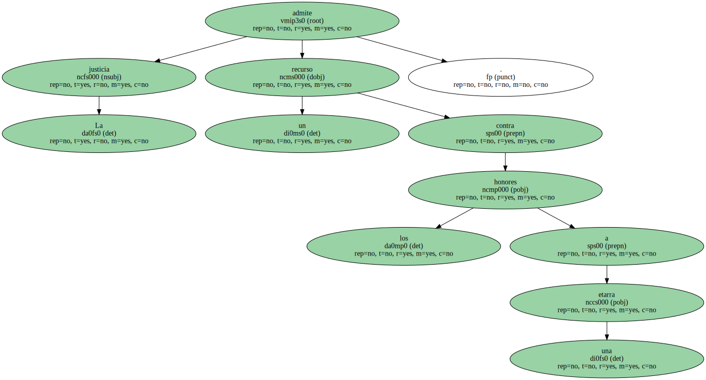
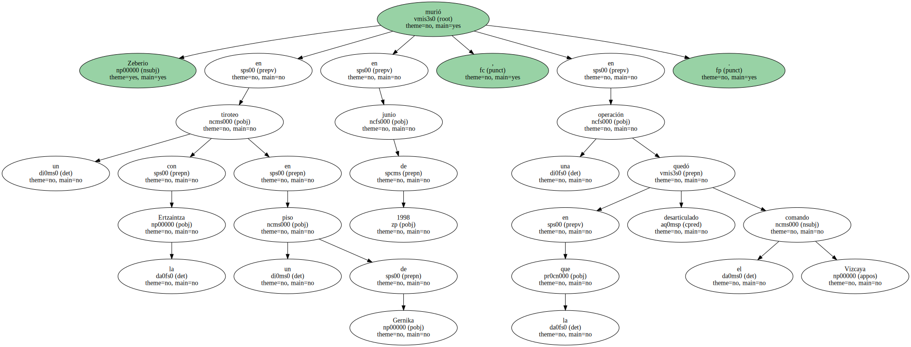
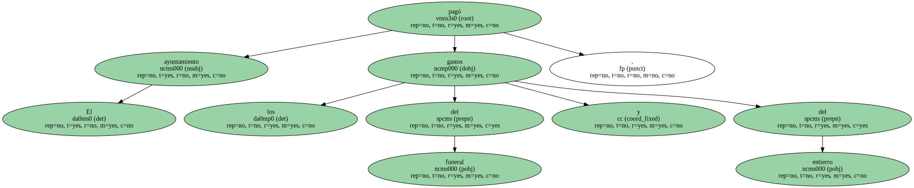

La justicia admite un recurso contra los honores a una etarra.
El recurso fue presentado por el abogado del Estado contra el nombramiento de la terrorista Inazia Zeberio como hija predilecta de Lizarza ( Guipúzcoa ) , municipio en el que gobierna con mayoría absoluta Herri Batasuna ( HB ).

Zeberio murió en un tiroteo con la Ertzaintza en un piso de Gernika en junio de 1998 , en una operación en la que quedó desarticulado el comando Vizcaya.
El ayuntamiento pagó los gastos del funeral y del entierro.
